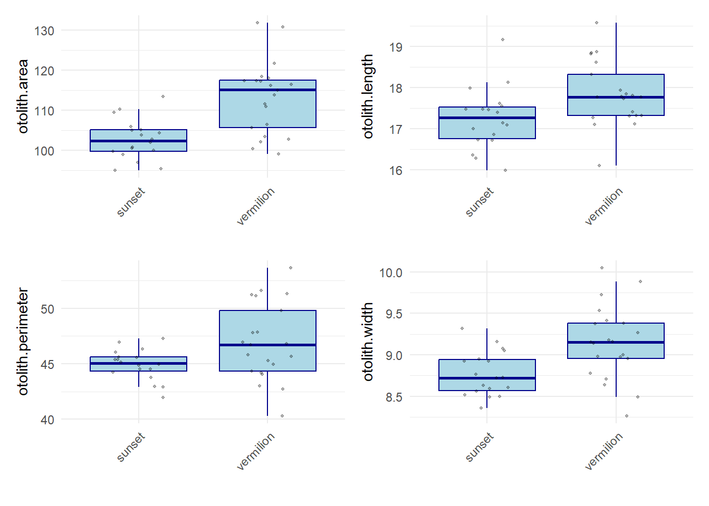
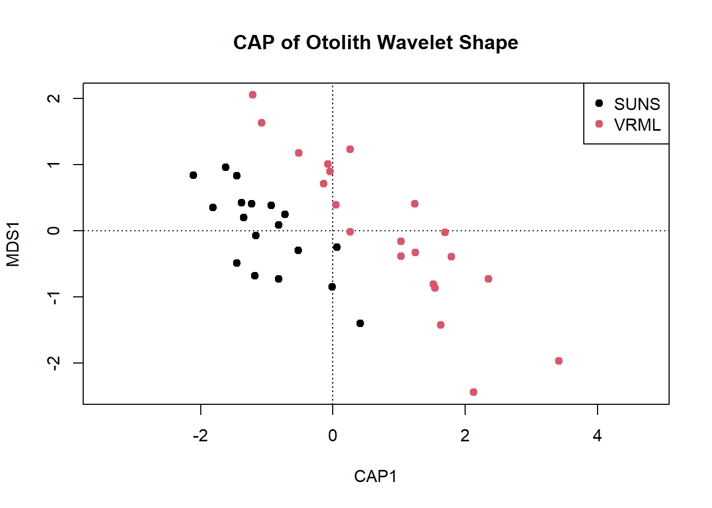
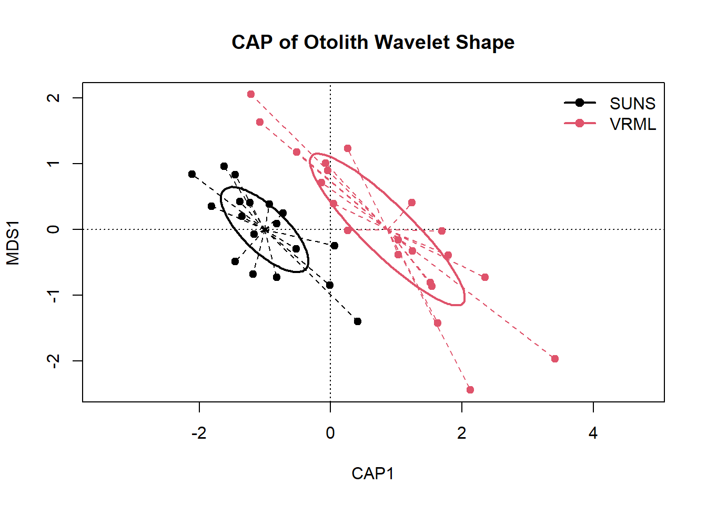
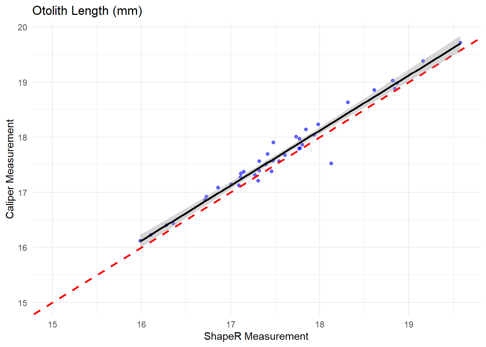
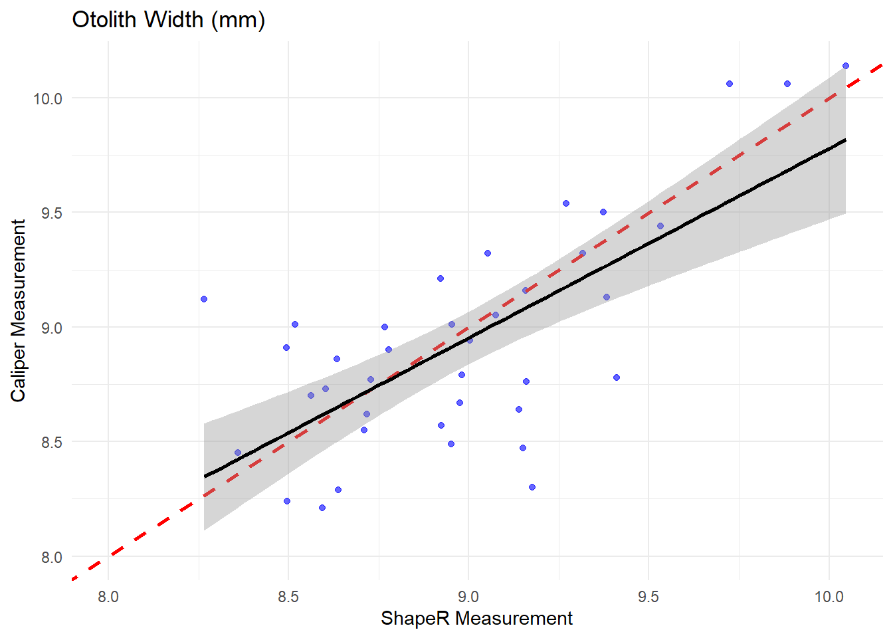
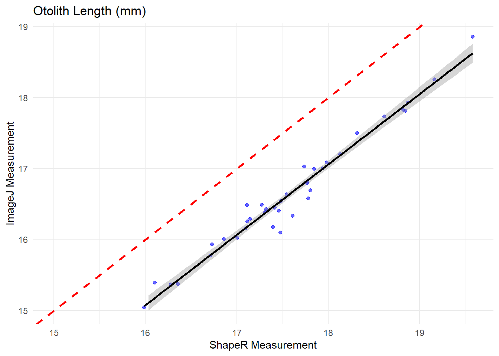
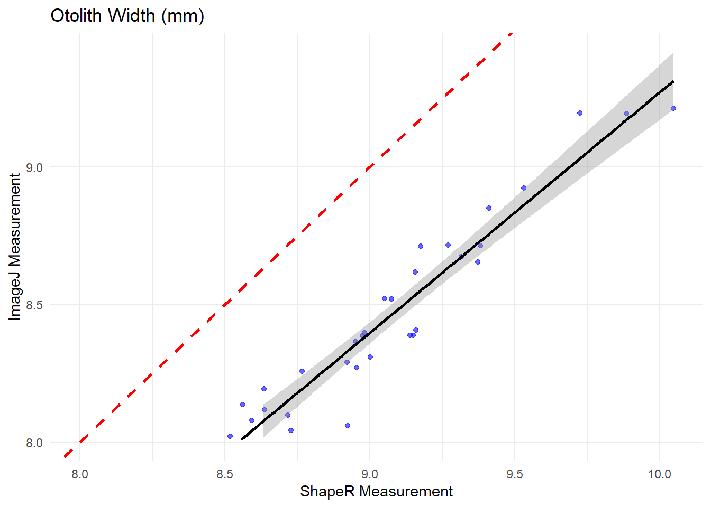

This chunk load shapeR and retrieve data, as well as sets project path folder.
# load shape R and retrieve datalibrary(here)
here() starts at C:/Users/rachel.brooks/Documents/GitHub/Otolith-Morphometric-Project
library(shapeR)#Set project path to the folder 'ShapeAnalysis'shape <-shapeR(project.path =here("ShapeR", "ShapeAnalysis"), info.file ="VRML-SUNS-subset.csv")
Creating a ShapeR object outline from image files
detect.outline(): Obtain the outline of each otolith. The outlines are detected by first transforming the images into gray-scale. The images are then binarized using a threshold pixel value (intensity threshold) which can be defined by the user. The outlines are then collected automatically from all images in the folder ‘Fixed’. Modification of the outlines are stored in different slots within the shape data object.
threshold argument is used to distinguish the white otolith from black background (essentially increases contrast)
write.outline.w.org argument determines whether the detected outline should be written on top of the original image (TRUE) or not (FALSE) in the folder ‘Original_with_outline’ which shapeR makes automatically and places into the folder ‘ShapeAnalysis’. It is recommended to run the images with the write.outline.w.org = TRUE the first time the images are run for quality checking, to see if the outline fits the original image from the microscope.
If an error occurs, or the outline is of low quality, the outline can be removed from the shapeR instance:
shape = remove.outline(shape,“IC”,“403_54”)
To view an individual otolith with outline:
show.original.with.outline(shape,“IC”,“403_54”)
smoothout argument calculates a weighted moving average over three succesive coordinate points to smooth multiple outlines. The number of iterations (ex: n = 100) provided by the user is the maximum number of iterations of smoothing. This argument is used to reduce high frequency pixel noise around the outlines which can corrupt Fourier or Wavelength analysis.
generateShapeCoefficients argument extracts the shape coefficient from the captured outlines
enrich.master.list argument connects data file containing information on origin and size of the fish to the outlines
# Trace orange outline around otolith - saves in Original_with_outlineshape =detect.outline(shape, threshold =0.20, write.outline.w.org =TRUE)
|
| | 0%
|
|== | 3%
Warning in par(oldpar): calling par(new=TRUE) with no plot
|
|==== | 5%
Warning in par(oldpar): calling par(new=TRUE) with no plot
|
|===== | 8%
Warning in par(oldpar): calling par(new=TRUE) with no plot
|
|======= | 10%
Warning in par(oldpar): calling par(new=TRUE) with no plot
|
|========= | 13%
Warning in par(oldpar): calling par(new=TRUE) with no plot
|
|=========== | 15%
Warning in par(oldpar): calling par(new=TRUE) with no plot
|
|============= | 18%
Warning in par(oldpar): calling par(new=TRUE) with no plot
|
|============== | 21%
Warning in par(oldpar): calling par(new=TRUE) with no plot
|
|================ | 23%
Warning in par(oldpar): calling par(new=TRUE) with no plot
|
|================== | 26%
Warning in par(oldpar): calling par(new=TRUE) with no plot
|
|==================== | 28%
Warning in par(oldpar): calling par(new=TRUE) with no plot
|
|====================== | 31%
Warning in par(oldpar): calling par(new=TRUE) with no plot
|
|======================= | 33%
Warning in par(oldpar): calling par(new=TRUE) with no plot
|
|========================= | 36%
Warning in par(oldpar): calling par(new=TRUE) with no plot
|
|=========================== | 38%
Warning in par(oldpar): calling par(new=TRUE) with no plot
|
|============================= | 41%
Warning in par(oldpar): calling par(new=TRUE) with no plot
|
|=============================== | 44%
Warning in par(oldpar): calling par(new=TRUE) with no plot
|
|================================ | 46%
Warning in par(oldpar): calling par(new=TRUE) with no plot
|
|================================== | 49%
Warning in par(oldpar): calling par(new=TRUE) with no plot
|
|==================================== | 51%
Warning in par(oldpar): calling par(new=TRUE) with no plot
|
|====================================== | 54%
Warning in par(oldpar): calling par(new=TRUE) with no plot
|
|======================================= | 56%
Warning in par(oldpar): calling par(new=TRUE) with no plot
# Connect data file 'FISH.csv' to the outlinesshape =enrich.master.list(shape)# Save shape objectsave(shape, file ="VRML-SUNS-subset.RData")
Mean otolith shape
plotWaveletShape argument plots the mean otolith shape using the Wavelet coefficients
plotFourierShape argument plots the mean otolith shape using the Wavelet coefficients
Can adjust parameter to an alternate variable depending on what you’re looking to compare (i.e., “sex”, “species”, etc.) - here we’re comparing species using the “PacFIN_Species_Code”
# Plot mean otolith shape using Wavelet coefficient png("wavelet_shape_plot.png", width =2500, height =1500, res =300)plotWaveletShape(shape, "PacFIN_Species_Code", show.angle =TRUE, lwd =2,lty =1)dev.off()
png
2
# Plot mean otolith shape using Fourier coefficientpng("Fourier_shape_plot.png", width =2500, height =1500, res =300)plotFourierShape(shape, "PacFIN_Species_Code", show.angle =TRUE, lwd =2,lty =1)dev.off()
png
2
Morphometric measurements
First, you will nedd to extract the master.list data frame from the shape object and assign it to a new variable. I called it fish_data. Now you can work with fish_data as a regular data frame in your analyses or plotting.
getMeasurements argument allows you to collect all otolith measurements (otolith length, width, perimeter, and area) from unstandardized otoliths
Feret length and width are concepts used in image analysis to describe the maximum distance between two parallel lines tangent to an object - measuring the longest distance across an object, regardless of orientation.
For each species, the mean for the variables in the summary statistics (area, length, perimeter, width) can be calculated:
getStdMeasurements argument allows you to collect all otolith measurements (otolith length, width, perimeter, and area) from standardized otoliths
fish_data <- shape@master.list# Get length, width, area, perimeter of otolithmeasurements <-getMeasurements(shape)# Calculate mean of the otolith morphometric variable: # Otolith areatapply(getMeasurements(shape)$otolith.area, getMasterlist(shape)$PacFIN_Species_Code, mean)
Adjusting coefficients for fish length and wavelet/fourier reconstruct
stdCoefs argument evaluates each Wavelet and Fourier coefficient and adjusts the otolith shape with respect to allometric relationships with the fish lengths.
Those coefficients which show interaction (P<0.05), between population and length, are omitted automatically.
In order to account for increased alpha error due to multiple testing of the different coefficients it is possible to conduct the Bonferroni adjustment
estimate.outline.reconstruction argument estimates the quality of the Wavelet and Fourier reconstruction by comparing how it deviates from otolith outline
The quality increases with the increase of Wavelet/Fourier coefficients used
plotWavelet argument can be used to inspect how the variation in the Wavelet coefficients is dependent on the position along the outline. The proportion of variation among groups, the interclass correlation (ICC), gives further information about the partition of the variation along the outline
Box and whisker plots comparing the four otolith morphometrics between vermilion and sunset
Statistical analysis:
Before comparing each group check data for distribution and variance
Compare groups using either a wilcoxon rank-sum test (non-normal) or student’s t-test (normal and equal variance)
Scenario
Recommended Test
Two groups, non-normal data
Wilcoxon rank-sum test
Two groups, normal + equal var
Student’s t-test
library(ggplot2)
Warning: package 'ggplot2' was built under R version 4.4.2
library(tidyr)library(dplyr)
Attaching package: 'dplyr'
The following objects are masked from 'package:stats':
filter, lag
The following objects are masked from 'package:base':
intersect, setdiff, setequal, union
library(patchwork)
Warning: package 'patchwork' was built under R version 4.4.3
# Define morphometric columnsmorphometrics <-c("otolith.length", "otolith.width", "otolith.area", "otolith.perimeter")# Reshape datalong_data <- fish_data %>%select(Species, all_of(morphometrics)) %>%pivot_longer(cols =all_of(morphometrics),names_to ="morphometric",values_to ="value")# Create a list of plots for each morphometricplots <- long_data %>%group_split(morphometric) %>%lapply(function(df) { morph_name <-unique(df$morphometric)ggplot(df, aes(x = Species, y = value)) +geom_boxplot(outlier.shape =NA, fill ="lightblue", color ="darkblue") +geom_jitter(width =0.2, alpha =0.3, size =0.7) +theme_minimal() +labs(title =NULL,x ="",y = morph_name # dynamic y-axis label ) +theme(axis.text.x =element_text(angle =45, hjust =1),plot.title =element_text(size =14, face ="bold") ) })# Combine plots with patchworkwrap_plots(plots, ncol =2)

# Save as high-res PNGggsave("otolith_morphometrics-comp-subset.png", plot =last_plot(), width =8, height =6, dpi =300)# Run t-test (normal distributed data) or wilcoxon rank-sum test to compare otolith shape/size among populationslibrary(rstatix)
Warning: package 'rstatix' was built under R version 4.4.3
Attaching package: 'rstatix'
The following object is masked from 'package:stats':
filter
#Normally distributed datat_test_results <-list()for (metric in morphometrics) { formula <-as.formula(paste(metric, "~ Species")) result <- fish_data %>%t_test(formula)cat("\n\n---", metric, "---\n")print(result) t_test_results[[metric]] <- result}
# NOT normally distributed wilcox_results <-list()for (metric in morphometrics) { formula <-as.formula(paste(metric, "~ Species")) result <- fish_data %>%wilcox_test(formula)# Print summarycat("\n\n---", metric, "---\n")print(result)# Store result wilcox_results[[metric]] <- result}
Load vegan package (used for multivariate ecological analyses
Extract both the standardized wavelet coefficients (wavelet_data) and corresponding metadata (meta_data) - check that the number of rows (individuals) matches in both datasets.
Perform Canonical Analysis of Principal Coordinates (CAP) to test how well otolith shape (wavelet data) can discriminate between species (can use ‘PacFIN_Species_Code’ or ‘Species’ column). I used euclidian distances between samples, since data are continuous measurements (wavelet coefficient shape descriptors) and euclidian preserves linear geometry.
summary(): Shows the proportion of variance explained by each CAP axis.
anova(): Tests overall significance of the CAP model.
anova(..., by = "terms"): Tests the significance of each term (e.g., species) individually.
Make the CAP plot
Plot the CAP results (no points initially, just axes).
Adds colored points by species
Adds a legend mapping colors to species.
Extract CAP scores for each fish and store them with species labels for further plotting/analyses.
Plot ellipses for each group - there is code to plot this for 1 SD and 95% CI.
Use ordispider() to draw lines from group centroids to individual points.
library(vegan)
Warning: package 'vegan' was built under R version 4.4.3
Loading required package: permute
Warning: package 'permute' was built under R version 4.4.3
Permutation test for capscale under reduced model
Permutation: free
Number of permutations: 999
Model: capscale(formula = wavelet_data ~ PacFIN_Species_Code, data = meta_data, distance = "euclidean")
Df SumOfSqs F Pr(>F)
Model 1 4.4961 6.4904 0.001 ***
Residual 37 25.6311
---
Signif. codes: 0 '***' 0.001 '**' 0.01 '*' 0.05 '.' 0.1 ' ' 1
# Optional: Test individual terms (like 'Species')anova(cap_model, by ="terms")
Permutation test for capscale under reduced model
Terms added sequentially (first to last)
Permutation: free
Number of permutations: 999
Model: capscale(formula = wavelet_data ~ PacFIN_Species_Code, data = meta_data, distance = "euclidean")
Df SumOfSqs F Pr(>F)
PacFIN_Species_Code 1 4.4961 6.4904 0.001 ***
Residual 37 25.6311
---
Signif. codes: 0 '***' 0.001 '**' 0.01 '*' 0.05 '.' 0.1 ' ' 1
#VEGAN PLOTplot(cap_model, display ="sites", type ="n", main ="CAP of Otolith Wavelet Shape")points(cap_model, display ="sites", col =as.factor(meta_data$PacFIN_Species_Code), pch =19)legend("topright", legend =unique(meta_data$PacFIN_Species_Code), col =1:length(unique(meta_data$PacFIN_Species_Code)), pch =19)

# Extract CAP site scorescap_scores <-scores(cap_model, display ="sites") # site (individual) scoresscores_df <-as.data.frame(cap_scores)scores_df$species <- meta_data$PacFIN_Species_Code#SD confidence interval# Create a blank base plotplot(cap_model, display ="sites", type ="n", main ="CAP of Otolith Wavelet Shape",xlab ="CAP1", ylab ="MDS1")# Add points colored by speciespoints(cap_model, display ="sites", col =as.factor(meta_data$PacFIN_Species_Code), pch =19)# Add 1 standard deviation ellipses around each species groupordiellipse(cap_model, groups = meta_data$PacFIN_Species_Code, display ="sites", kind ="sd", col =1:2, lwd =2, draw ="lines")# Add centroid “spiders” from group centroid to each pointordispider(cap_model, groups = meta_data$PacFIN_Species_Code, display ="sites", col =1:2, lty =2)# Add legendlegend("topright", legend =levels(as.factor(meta_data$PacFIN_Species_Code)),col =1:2, pch =19, lwd =2, bty ="n")

#### 95% confidence interval# Base CAP plotplot(cap_model, display ="sites", type ="n", main ="CAP of Otolith Shape (95% CI Ellipses)",xlab ="CAP1", ylab ="MDS1")# Pointspoints(cap_model, display ="sites", col =as.factor(meta_data$PacFIN_Species_Code), pch =19)# 95% CI ellipsesordiellipse(cap_model, groups = meta_data$PacFIN_Species_Code, display ="sites", kind ="se", conf =0.95, col =1:2, lwd =2, lty =2)# Optional: centroids via spidersordispider(cap_model, groups = meta_data$PacFIN_Species_Code, display ="sites", col =1:2, lty =3)# Legendlegend("topright", legend =levels(as.factor(meta_data$PacFIN_Species_Code)),col =1:2, pch =19, bty ="n")
This is where I compare caliper vs. ImageJ vs. ShapeR measurements. Plotting linear relationships between the different sources. Include a 1:1 line in the plot and compare linear fit of the different morphometric sources to the 1:1 line.
#Caliper Comparisonggplot(fish_data, aes(x = otolith.length, y = Caliper_length_mm)) +geom_point(alpha =0.6, color ="blue") +geom_abline(slope =1, intercept =0, linetype ="dashed", color ="red", size =1) +geom_smooth(method ="lm", se =TRUE, color ="black") +scale_x_continuous(name ="ShapeR Measurement", limits =c(15, NA)) +# Start x-axis at 1scale_y_continuous(name ="Caliper Measurement", limits =c(15, NA)) +# Start y-axis at 1labs(title ="Otolith Length (mm)") +theme_minimal()
Warning: Using `size` aesthetic for lines was deprecated in ggplot2 3.4.0.
ℹ Please use `linewidth` instead.
`geom_smooth()` using formula = 'y ~ x'

ggplot(fish_data, aes(x = otolith.width, y = Caliper_width_mm)) +geom_point(alpha =0.6, color ="blue") +geom_abline(slope =1, intercept =0, linetype ="dashed", color ="red", size =1) +geom_smooth(method ="lm", se =TRUE, color ="black") +scale_x_continuous(name ="ShapeR Measurement", limits =c(8, NA)) +# Start x-axis at 1scale_y_continuous(name ="Caliper Measurement", limits =c(8, NA)) +# Start y-axis at 1labs(title ="Otolith Width (mm)") +theme_minimal()
`geom_smooth()` using formula = 'y ~ x'
Warning: Removed 1 row containing non-finite outside the scale range
(`stat_smooth()`).
Warning: Removed 1 row containing missing values or values outside the scale range
(`geom_point()`).

#ImageJ Comparisonggplot(fish_data, aes(x = otolith.length, y = ImageJ_length_pix_mm)) +geom_point(alpha =0.6, color ="blue") +geom_abline(slope =1, intercept =0, linetype ="dashed", color ="red", size =1) +geom_smooth(method ="lm", se =TRUE, color ="black") +scale_x_continuous(name ="ShapeR Measurement", limits =c(15, NA)) +# Start x-axis at 1scale_y_continuous(name ="ImageJ Measurement", limits =c(15, NA)) +# Start y-axis at 1labs(title ="Otolith Length (mm)") +theme_minimal()
`geom_smooth()` using formula = 'y ~ x'

ggplot(fish_data, aes(x = otolith.width, y = ImageJ_width_pix_mm)) +geom_point(alpha =0.6, color ="blue") +geom_abline(slope =1, intercept =0, linetype ="dashed", color ="red", size =1) +geom_smooth(method ="lm", se =TRUE, color ="black") +scale_x_continuous(name ="ShapeR Measurement", limits =c(8, NA)) +# Start x-axis at 1scale_y_continuous(name ="ImageJ Measurement", limits =c(8, NA)) +# Start y-axis at 1labs(title ="Otolith Width (mm)") +theme_minimal()
`geom_smooth()` using formula = 'y ~ x'
Warning: Removed 8 rows containing non-finite outside the scale range
(`stat_smooth()`).
Warning: Removed 8 rows containing missing values or values outside the scale range
(`geom_point()`).
Warning: Removed 2 rows containing missing values or values outside the scale range
(`geom_smooth()`).

Classifications of Individuals
This chunk of code is running a cross-validation analysis using Linear Discriminant Analysis (LDA) to classify fish to their species based on wavelet shape descriptors extracted from their otoliths.
The cross validation classification estimate produces a missclassification error
- **EX:** If you receive a misclassification error of 0.2051, this means 20.5% of fish were misclassified, or 79.5% were correctly classified
- May receive a "*Warning: variables are collinear*" warning - this comes from LDA beign applied to many correlated wavelet coefficients (common in shape analysis). It doesn't stop the analysis but warns that some predictors may be redundant.
library(MASS) # For lda()
Warning: package 'MASS' was built under R version 4.4.2
Attaching package: 'MASS'
The following object is masked from 'package:rstatix':
select
The following object is masked from 'package:patchwork':
area
The following object is masked from 'package:dplyr':
select
library(ipred) # For errorest()
Warning: package 'ipred' was built under R version 4.4.3
Warning in lda.default(x, grouping, ...): variables are collinear
Warning in lda.default(x, grouping, ...): variables are collinear
Warning in lda.default(x, grouping, ...): variables are collinear
Warning in lda.default(x, grouping, ...): variables are collinear
Warning in lda.default(x, grouping, ...): variables are collinear
Warning in lda.default(x, grouping, ...): variables are collinear
Warning in lda.default(x, grouping, ...): variables are collinear
Warning in lda.default(x, grouping, ...): variables are collinear
Warning in lda.default(x, grouping, ...): variables are collinear
Warning in lda.default(x, grouping, ...): variables are collinear